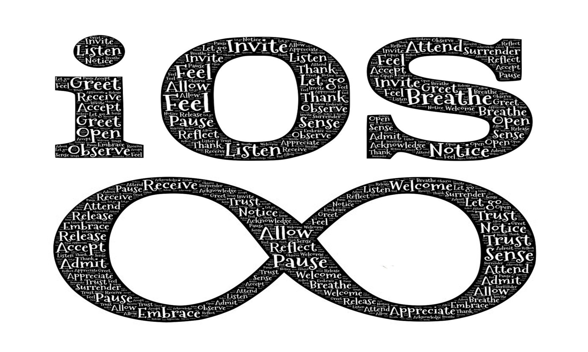
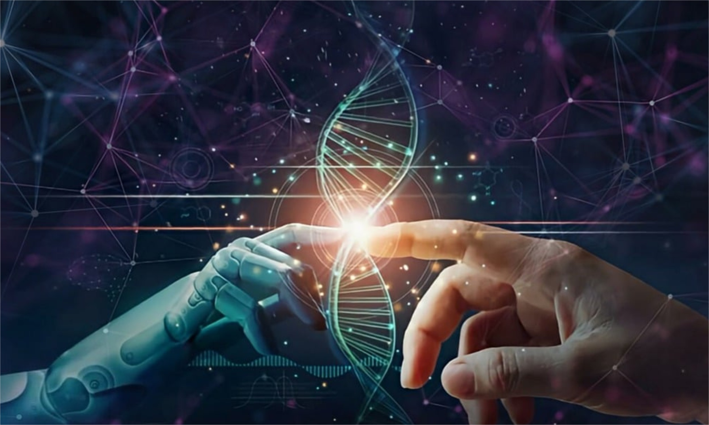

Aspectos a considerar para escoger una computadora portátil.
Comprar una laptop puede ser todo un desafío....De repente te ves frente a un sinfín de opciones y características que en ocasiones no entendemos. A continuación, hemos preparado una guía simple que te ayudará a elegir la mejor laptop para ti. ¡Conoce los 7 consejos que tenemos para ti!

Los sistemas operativos más usados (2023).
En este artículo, exploraremos los sistemas operativos más usados en la actualidad y su relevancia y por qué es importante conocer las características de cada uno de ellos.

Ventajas y desventajas de la Inteligencia artificial.
La Inteligencia Artificial consiste en dotar de inteligencia a las máquinas. Es decir, darle a las máquinas capacidades para resolver problemas o llevar a cabo tareas complejas.